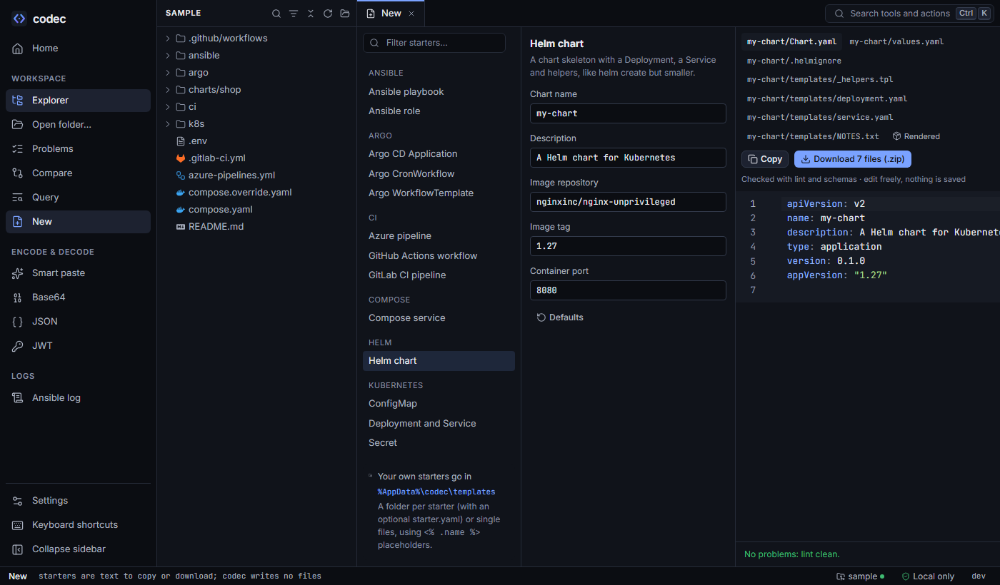
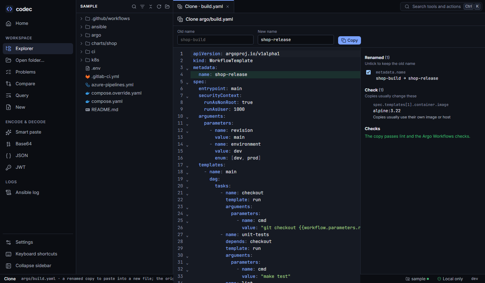

New files and clones
Start new YAML from a checked starter instead of copying an old file and forgetting to change half of it — or clone an existing file under a new name and let codec rename everything that should change.
Starters#

Open New in the sidebar or "New file from a starter…" in the palette. Pick a starter, fill in the short form (defaults are sensible), and read the result on the right. Every file is linted and schema-checked as you type; a chart is also rendered with helm template and its output checked (the Rendered tab). You can edit the preview — edits are what-if and are re-checked — then Copy a file or Download them all as a zip. codec writes nothing itself.
| Group | Starters |
|---|---|
| Kubernetes | Deployment and Service (optional Ingress), ConfigMap, Secret |
| Helm | Helm chart: Chart.yaml, values, helpers, Deployment, Service, NOTES |
| Argo | WorkflowTemplate (DAG), CronWorkflow, Argo CD Application |
| CI | GitHub Actions workflow (by language), GitLab CI pipeline, Azure pipeline |
| Compose | Compose service (optional PostgreSQL) |
| Ansible | Playbook, role (tasks, handlers, defaults, meta) |
Starters follow current practice: pinned image tags, requests and limits, probes, a restrictive security context, least-privilege CI permissions. Form fields are validated (DNS names, ports, images, cron expressions), and fields that don't apply hide themselves.
Your own starters#
Put your team's templates in the templates folder of codec's settings folder (%AppData%\codec\templates, ~/Library/Application Support/codec/templates or ~/.config/codec/templates). They appear in the New view and in codec new next to the built-in ones, read fresh each time.
- A single file — its fields are the placeholders it uses. A field used only as a condition becomes a switch.
- A folder per starter, with an optional
starter.yamldescribing the form: title, description, fields (label, help, type, default, choices, validation, when to show) and the files to write.
Placeholders use <% %> so they don't clash with the {{ }} of Helm, Argo and Jinja, GitHub's ${{ }} or shell [[ ]]:
apiVersion: v1
kind: ConfigMap
metadata:
name: <% .name %>
labels:
team: <% .team | quote %>
data:
LOG_LEVEL: info
<%- if .debug %>
DEBUG: "true" # "debug" is only a condition, so it becomes a switch
<%- end %>Helpers available in placeholders: quote, yaml (a safely quoted YAML scalar), lower, upper, snake, env (MY_VAR style), title. A misspelt field is an error rather than empty output.
Clone with a new name#

argo/build.yaml as shop-release: one rename, one thing to check, and the copy passes lint and the Argo checks.The clone button on a YAML file (or "Clone with a new name…" in the palette) copies the file, or one document of it, under a new name. codec guesses the old name — the name found in most other names — and you type the new one.
- Renamed: every whole-word use of the old name in values and keys (letters and digits bound a word, so
shopdoesn't touchworkshop):metadata.name, labels and selectors, template and job names, internal references. Comments and layout stay exactly as they were. - Not renamed, suggested: references to objects that aren't part of the copy (renaming them would break the reference), Secrets, images and addresses (URLs, registries, hosts). Tick one to rename it anyway.
- Check: things copies usually change even when they don't contain the name — images, hosts, Secret references.
- Label and annotation keys are never renamed.
Every change is listed and can be unticked; changed lines are tinted in the preview. The copy is checked like the original (lint, schemas and the lens's checks), then you copy the text into a new file.
Snippets#
In the editor, at the start of a key or a list item, Ctrl Space offers snippets for the file type; Tab moves between their fields:
| File type | Snippets |
|---|---|
| Kubernetes, Helm templates | container, readiness/liveness probe, resources |
| Argo Workflows | container, resources, a DAG task that depends on the last task |
| GitHub Actions | step, action step, job |
| GitLab CI | job |
| Ansible | task |
| Compose | service |
From the command line#
codec new # list built-in and personal starters
codec new k8s-app --set name=shop --set ingress=true --set host=shop.example.com
codec new helm-chart --set name=web # several files, each after "# ==> path <=="
codec new helm-chart --set name=web --file web/values.yaml
codec clone argo/build.yaml --to shop-release
codec clone k8s/app.yaml --doc 1 --to cart --all # one document; take the suggestions tooBoth commands print; nothing is written.